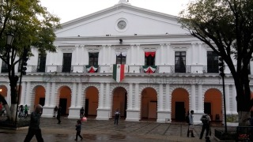
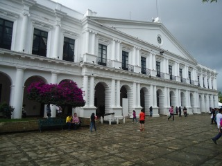
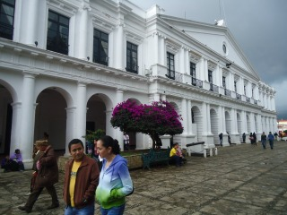
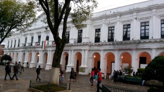
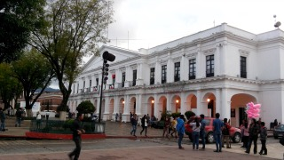

El Palacio Municipal se encuentra en el lado oeste. Construido en 1885, es un edificio histórico con una serie de arcos sostenidos por columnas de estilo clásico.
Sede del Ayuntamiento local de San Cristóbal de las Casas desde 1893, este edificio de estilo neoclásico es la obra del arquitecto Carlos Z. Flores quien remodeló sus dos pisos inspirándose del estilo del Maestro Vignola.
Su fachada muestra un frontón al que lo sostienen columnas toscanas y jónicas que enmarcan ventanas rectangulares de expresión neoclásica.
Se encuentra ubicado entre las calles Diego de Mazariegos y Guadalupe Victoria en el centro de la ciudad.
Si usted se encuentra ubicado el arco del carmen puede caminar 3 cuadras sobre el andador hasta llegar a la plaza 31 de Marzo, mejor conocida como parque central ahí se ubica el palacio municipal.
En el lugar usted puede realizar actividades como:
* Fotografía
* Visita a lugares históricos
* Visita Monumentos
* Asistencia a eventos gastronómicos





posicione el mouse sobre las imágenes